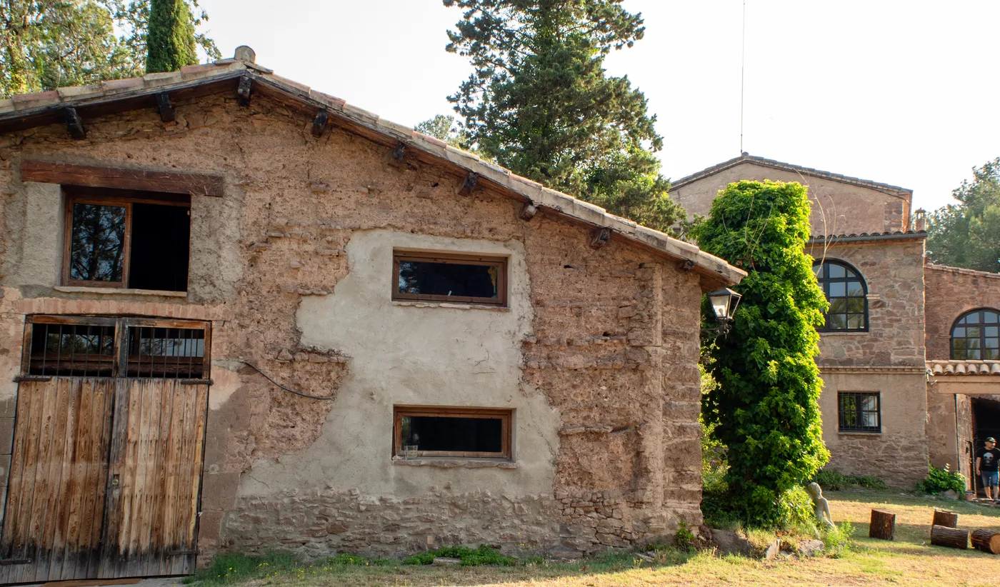
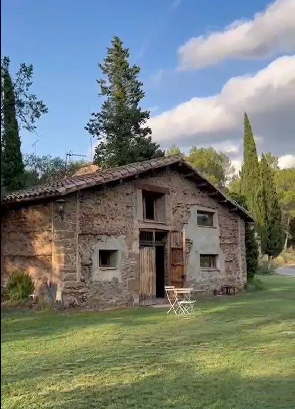
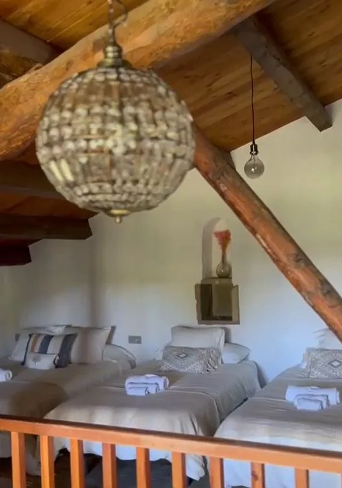
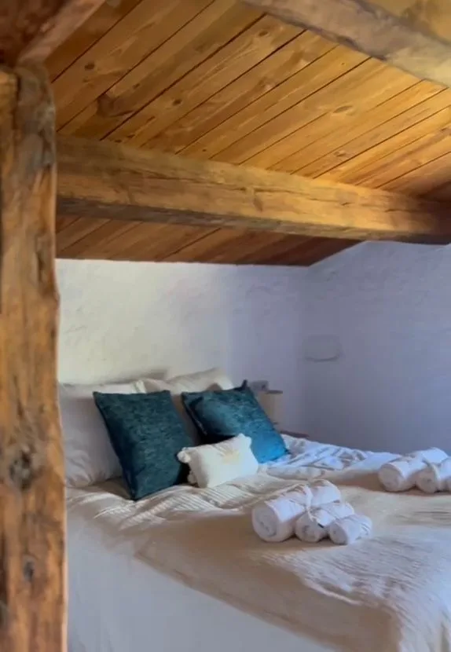
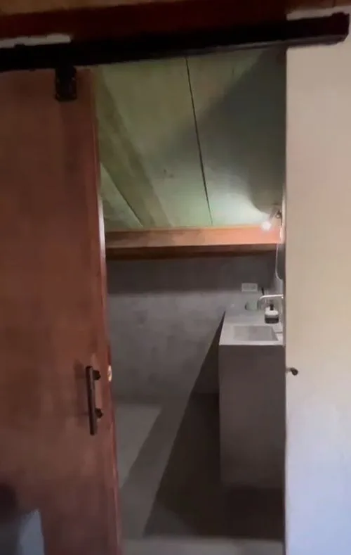
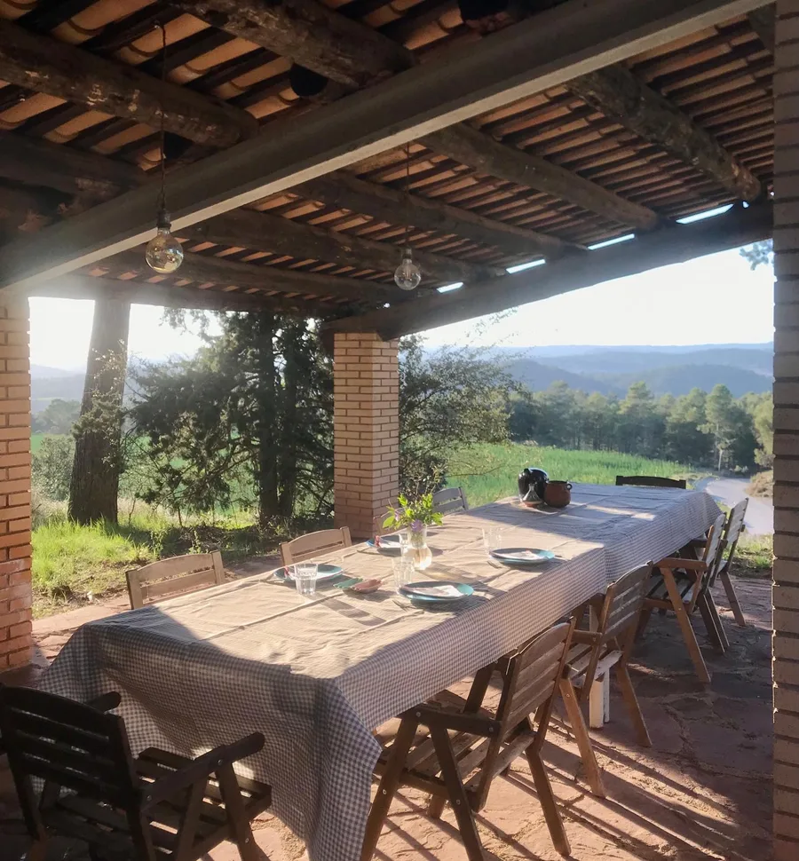
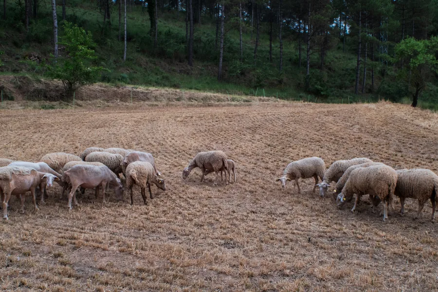
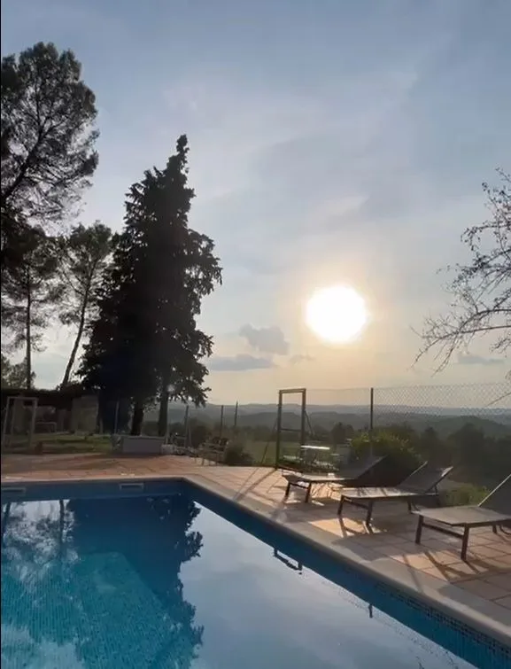

Piscina
Zona de baño y descanso para los huéspedes, con prioridad cuando hay más gente en la finca.
Dormir en la masia
Lo que se alquila es el Antiguo Granero: un espacio completo y con total intimidad para 7 personas, dentro de una masia grande donde la vida sigue su ritmo. Incluye un sofá cama doble adicional por si lo queréis tener en cuenta.

El Antiguo Granero es una construcción de madera de dos plantas. Abajo, cocina, comedor y salón con suelos de piedra. Arriba, un espacio diáfano con todas las camas. Todo el espacio es para tu grupo, con la calma de la montaña de Balsareny alrededor.
Las dos plantas
El Antiguo Granero se organiza en dos plantas de madera: la de abajo, para vivir juntos; la de arriba, para dormir en un espacio diáfano.
Cocina, comedor y salón con suelos de piedra original: el corazón de la casa, donde se cocina y se está en común.




Un espacio diáfano con todas las camas, pensado para descansar en grupo bajo la cubierta de madera.





Cómo es la masia
Mas Collades es una finca amplia. La casa principal de piedra es donde vive la familia. En el otro lado de la masia hay instalaciones anexas donde, algunos fines de semana, vienen tres familias: se comparten los espacios siempre con prioridad para los huéspedes del Antiguo Granero.
La masia histórica donde vivimos. Es la casa familiar y también acoge las bodegas donde se hace la visita del Viatge al passat.
El alojamiento que se reserva, íntegro para el grupo huéspedes de 7 personas, con sofá cama doble adicional. Espacio propio y silencio.
En el otro lado de la masia. Algunos fines de semana acogen a tres familias; los espacios se comparten con prioridad siempre para los huéspedes.
Vida de masia
Dentro del Antiguo Granero tienes intimidad total. Fuera, la finca está viva: el huerto, las gallinas, la leña, la piscina y el jardín forman parte de la experiencia de vivir en el campo.
Zona de baño y descanso para los huéspedes, con prioridad cuando hay más gente en la finca.

Zona de barbacoa exclusiva para los huéspedes, junto al jardín.

Baja a ver si hay producto que recoger y saluda a las gallinas: la vida del campo, a tu ritmo.

Baja a ver si hay producto que recoger y saluda a las gallinas: la vida del campo, a tu ritmo.

Las ovejas forman parte del paisaje de Mas Collades: vida de campo a diario.

Pista de frontón, pista de tenis y fútbol. No está todo hecho: cada día recuperamos un poco más de lo que ya existía.
Tarifas
Estancia mínima de 2 noches
Las tasas del alojamiento están incluidas en el precio
Cargador eléctrico para coche disponible con suplemento adicional
10% de descuento entre días de la semana fuera de julio y agosto, puentes y festivos
10% en estancias de más de 5 días (excepto julio y agosto)